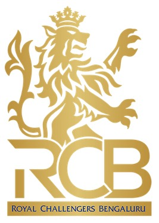

Royal Challengers Bangalore
Royal Challengers Bangalore (RCB), officially known as Royal Challengers Bengaluru, are a professional franchise cricket team based in Bangalore, Karnataka, competing in the Indian Premier League (IPL). Founded in 2008 by United Spirits, the team is named after the company's liquor brand, Royal Challenge. The M. Chinnaswamy Stadium in Bangalore serves as their home ground.
- RCB
- CSK
- DC
- MI
- SRH
- PBKS
- RR
- KKR